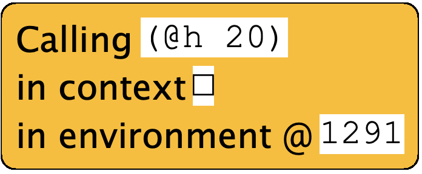
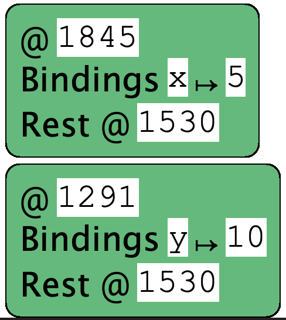

Back when we began to study evaluation [👉], we saw that we had a choice when performing evaluation. During function application, we could substitute the actual parameter as an expression or as a value. At that time, we indicated that SMoL is eager. Now we will investigate the other option, laziness.
Consider the following program:
(deffun (f x)
(g (+ x x)))
(deffun (g y)
(h (* y 2)))
(deffun (h x)
(+ x 5))
(f (+ 2 3))
When run eagerly in the Stacker, we see calls like

and the environment contents look like

Both the call and the environment reinforce that parameters are evaluated before the function body begins to execute, so names are bound to values.